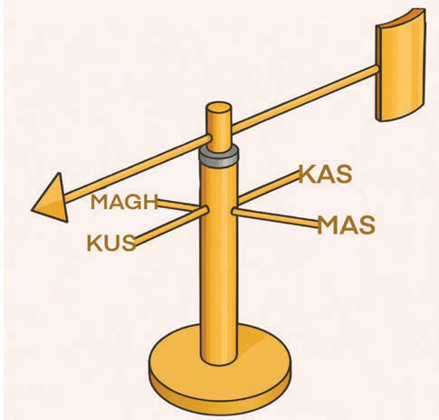

Kupima kasi ya upepo
Hatua za kupima kasi ya upepo kwa kutumia anemometa:
(a)
Shika/weka anemometa katika eneo wazi ambapo upepo unavuma kwa uhuru.
(b)
Chunguza mzunguko wa vikombe ambao hupimwa kwa mita na kubadilishwa kuwa kasi ya upepo.
(c)
Soma kasi ya upepo kwenye mita iliyounganishwa kwenye anemometa.
(d)
Rekodi kasi ya upepo kwa vipimo vya mita kwa sekunde, kilomita kwa saa, au maili kwa saa.
Kipima upepo
Hiki ni kifaa chenye mshale kwa juu ambao unaonesha uelekeo wa upepo. Mshale huo umepachikwa katika bomba, ambapo chini ya mshale zimewekwa mbao au vipande vya chuma vinavyowakilisha Pande Kuu za Dunia ambazo ni Kaskazini, Mashariki, Kusini na Magharibi. Upepo unapovuma, mshale huelekea upande upepo unapotokea. Soma maelezo ya Kielelezo namba 4:

Zingatia: Katika taaluma ya hali ya hewa upepo unatambuliwa kwa jina la mwelekeo unakotokea. Mfano; upepo unaotoka upande wa Kusini kuelekea Kaskazini huitwa upepo wa Kusini.